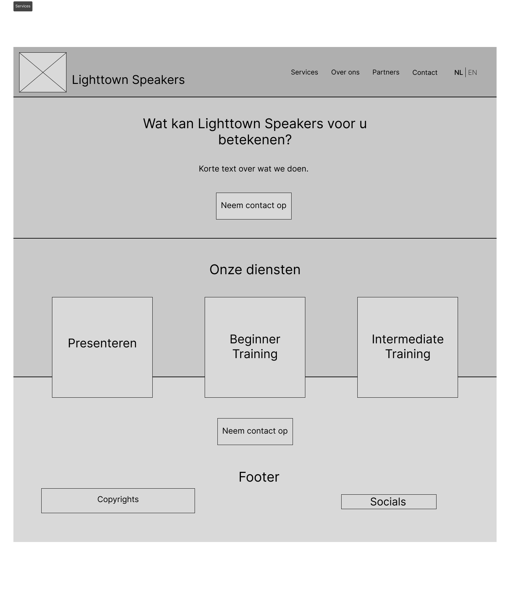
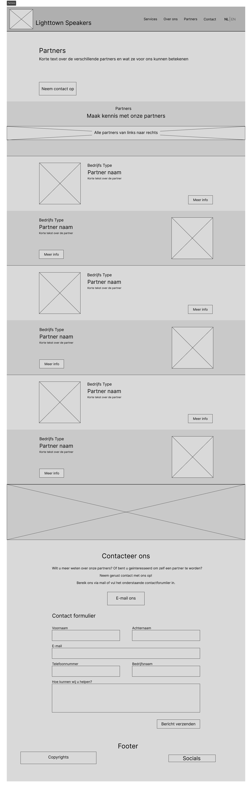
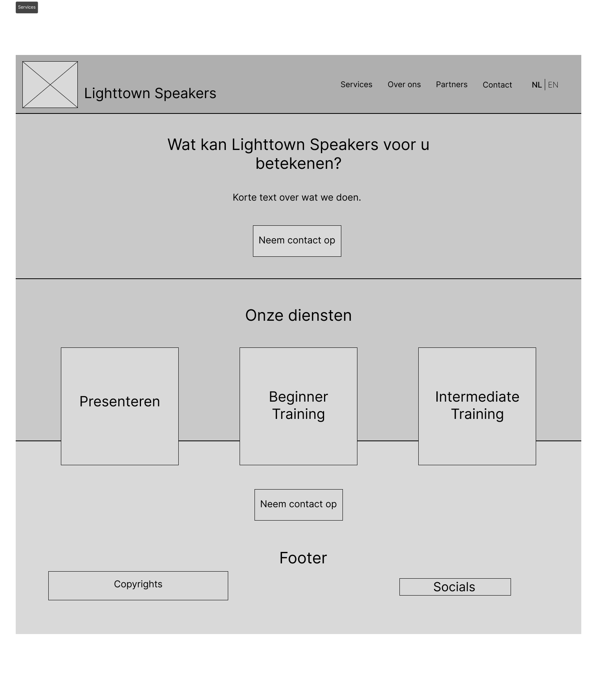
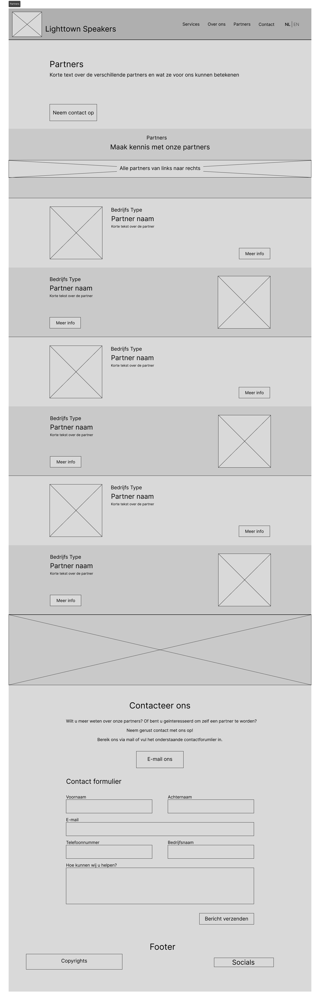

Iterative Design in detail
This is where you will find everything I’ve made for the learning outcome iterative design this semester, in greater detail.
This is where you will find everything I’ve made for the learning outcome iterative design this semester, in greater detail.
Lighttown Speakers, a club under the Toastmasters brand, needed a new website to improve their online presence and attract more members. The project aimed to create a user-friendly and engaging website. The design process required multiple iterations to refine the wireframe based on user feedback and testing.
My task was to develop a wireframe for the Lighttown Speakers website, emphasizing an iterative design approach. This involved creating initial designs, gathering feedback, making necessary adjustments, and repeating the process to enhance the final product. The goal was to ensure the website met user needs and provided an optimal user experience.
1. Initial Wireframe Creation: Developed the first version of the wireframe, outlining the basic structure and layout of the website. This included main sections such as the Landing Page, About Us, Partners, and Contact Us.
2. User Feedback and Testing: Conducted usability testing sessions with teachers to gather feedback on the initial wireframe regarding navigation, layout, and overall user experience.
3. Feedback Analysis: Analysed the feedback to identify common issues and areas for improvement. Teachers suggested that since target audience reach was a major goal for the website, we should consider SEO methods. This led to discarding the one-page design, which is generally poor for SEO.
4. Mock-up 1: Updated the wireframe based on the feedback. This included reorganizing the website structure, halting the development of the mobile version for a while, enhancing the visibility of important sections like upcoming events and partnership information, and moving on to creating a mock-up using the Toastmasters brand guide.
5. Second Round of Feedback: Conducted another round of feedback with teachers, focusing on the styling and colouring of the mock-up.
6. Feedback Incorporation: Reviewed the second round of feedback. Key changes included establishing a consistent call-to-action colour, which became yellow, decreasing the brightness of images for better text readability, and updating the footer to be more user-friendly.
7. Iteration 2: Implemented these changes to the mock-up, resulting in a more appealing website but recognizing that more work was needed.
8. Third Round of Feedback: Teachers suggested several changes, including revising the main colours. The yellow felt out of place, so I went for a colour scheme aligned with the Toastmasters website, mainly grey and blue. Red was used for call-to-action elements, gradients were made more subtle, and distracting diagonal images were removed from the services page.
9. Flat Colour Iteration: Some teachers suggested using flat colours instead of gradients, so I created an iteration with flat colours to evaluate this option.
10. Final Review and Testing: Presented all iterations to the teachers. The final feedback was to use different shades of the colour scheme to reduce vibrancy. By adding white with varying opacities, I achieved a range of blue shades, creating the final version. Additionally, a Partners page was added to fulfill the website's needs.

Step #1: Initial Wireframe Creation
 



Step #3: Feedback Analysis

Step #4: Mock-up 1


Step #7: Iteration 2


Step #8: Third Round of Feedback


Step #9: Flat Colour Iteration


Step #10: Final Review and Testing
The iterative design process resulted in a coherent, user-friendly, and visually appealing mock-up for the Lighttown Speakers website. Each iteration incorporated valuable feedback, leading to a final design that met user needs and preferences. The final wireframe provided a solid starting point for the website development.
This project highlighted the importance of an iterative design approach in web design. Iterative testing and feedback allowed for continuous improvements and ensured that the final product closely aligned with user expectations. I learned that flexibility and responsiveness to feedback are crucial in design. By asking a multitude of teachers and listening to their different point of views and continuously refining the wireframe, I was able to create a more effective and appealing website. In future projects, I will prioritize iterative design to ensure high-quality outcomes.
Throughout the creation of my portfolio, I adopted an iterative design approach, focusing on refining visual appeal and usability through multiple feedback cycles. Here’s how I navigated through the process:
1. Initial Conceptualization and Wireframing: I started by outlining the basic structure and content flow of my portfolio. This foundational stage set the direction for subsequent iterations.
2. First Iteration: Gathering feedback from teachers on the initial wireframe provided valuable insights. It highlighted the need to refine my color palette and ensure consistency throughout the design.
3. Second Iteration: Incorporating feedback, I adjusted the color palette and created a moodboard to better align with the portfolio's theme. I also expanded on content to enhance completeness.
4. Third Iteration: Further feedback led me to refine the layout, particularly focusing on the design of learning outcomes hexagons and adjusting spacing across pages for better coherence and visual harmony.
Key Learnings:
Iterative Approach: Embracing iterative design allowed me to continuously refine and enhance my portfolio, ensuring it met high standards of usability and visual appeal.
Importance of Planning: Regular feedback from teachers underscored the significance of thorough planning in achieving a polished final product. It emphasized the balance between content richness and visual presentation.
My journey in creating this portfolio highlights the critical role of iterative design and responsive feedback in achieving a professional and visually cohesive outcome.

Step #1: Initial Wireframe Creation


Step #2: First Mock-up


Step #3: Mock-up 2


Step #4: Final Mock-up
I started my SprintX project with the goal of creating an online archive for Pokemon card collections, focusing on designing an intuitive and visually engaging interface.
- Initial Wireframe: I explored initial design concepts inspired by the physical binder metaphor, aiming to recreate the tactile experience of navigating a card collection.
- Iteration 1: Based on feedback, I shifted towards a book metaphor, developing an interactive interface where users could flip through virtual pages to view their card collection. This iteration aimed to enhance user interaction and navigation.
- Final Mock-up: I refined the design into a mockup featuring a lighter theme, vibrant colors, and animations that simulate zooming into the collection, aiming to create a more immersive user experience.
Throughout the SprintX project, I learned the importance of iterative design in refining user interfaces. Each iteration allowed me to gather feedback, pivot when necessary, and ultimately deliver a more user-friendly and visually appealing product. The transition from initial wireframes to the final mockup highlighted the evolution in design thinking and the iterative process's role in shaping a cohesive and engaging user experience.


Step #1: Initial Wireframe Creation


Step #2: Collection Iteration


Step #3: Mock-up
Results:
- Successfully transitioned from ambitious map-inspired design to a practical book metaphor,
achieving a more intuitive and visually appealing interface.
- Integrated vibrant colors and animations effectively, enhancing user engagement and enjoyment of browsing their Pokémon card collection.
- Prepared for future enhancements with plans to implement more sorting features, adding a user account, possible trading expanding the archive's functionality based on user feedback.
Next Steps:
- Implement additional features such as search and sorting functionalities.
- Expand the card database with more Pokémon card sets and details.
- Conduct usability testing and gather feedback to further improve the interface and user experience.
For our project of rebranding Eindhoven RockCity, one of our initial design tasks was to create a stylescape. This was a new experience for me, as I familiarized myself with the tools and techniques involved.
- Initial Stylescape: My first iteration incorporated elements inspired by rock music and utilized the brand's existing colors, primarily yellow and black. I experimented with shades of yellow to introduce variety and selected a font that resonated with the rock theme.
- Iteration 1: Based on feedback from my peers, I refined the stylescape by eliminating brown/gold tones that were less favored. I also included hex codes for the colors used and adjusted the layout to enhance visual coherence and impact.
Creating the Stylescapes for RockCity taught me valuable lessons in design iteration and incorporating feedback to refine visual concepts effectively. Each iteration was an opportunity to enhance the stylescape's alignment with the brand's identity and visual appeal.
.png)
Step #1: Initial Stylescape Creation

Step #2: Iteration 1